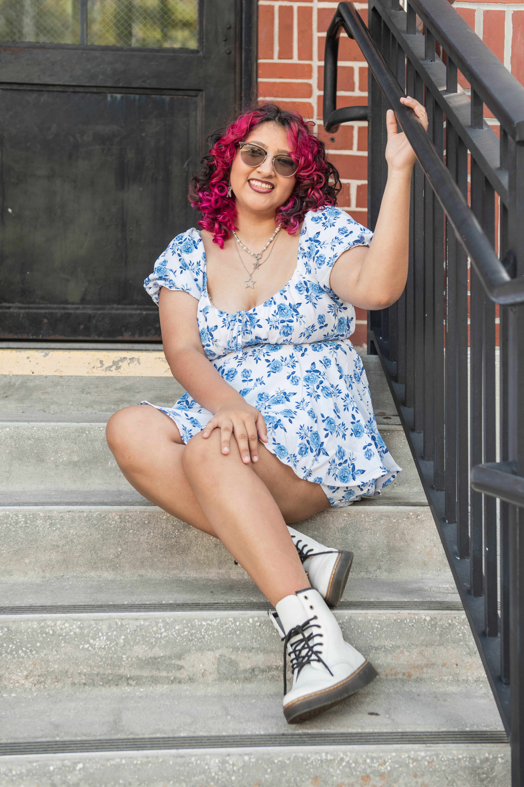

Greetings, I'm Alondra Lara, a graphic design student.
My passion for graphic design started off in high school when I excelled in my digital art class.
From then on, I knew I wanted to continue this on.
Here you'll find projects that showcase my passion for creativity, growth and design. While I'm always
up for a challenge I focus on logo design, branding,
illustration and layout design.
My goal is making sure every small detail gets noticed.